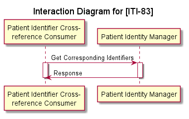

CH EPR mHealth (R4)
0.1.0 - Draft Standard for Trial Use
CH EPR mHealth (R4)
0.1.0 - Draft Standard for Trial Use
This page is part of the CH EPR mHealth (R4) (v0.1.0: DSTU 1) based on FHIR R4. . For a full list of available versions, see the Directory of published versions 
This section documents additional requirements in the Swiss EPR context on the Mobile Patient Identifier Cross-reference Query.
The Mobile Patient Identifier Cross-reference Query is used by an app in the Swiss EPR to query with the local identifier the MPI and get the corresponding MPI-PID and the EPR-SPID identifier for the patient.
Actor: Patient Identifier Cross-reference Consumer
Role: Queries the Patient Identifier Cross-reference Manager for the MPI-PID and EPR-SPID.
Actor: Patient Identity Manager
Role: Resolves the local ID sent with the request to the MPI-PID and EPR-SPID.
Patient Master Identity Registry (PMIR) – Revision 1.1 – December 5, 2019
Patient Identifier Cross-reference for Mobile (PIXm), Rev. 2.1 – Trial Implementation, December 5, 2019
This PIXm Profile is based on Release 4 of the emerging HL7® FHIR® standard.

A mobile app wants to access (read or write) documents, which requires the MPI-PID of the patient.
The message semantics is the same as defined in 3.83.4.1.2 with a restriction on the targetSystem query Parameter:
GET [base]/Patient/$ihe-pix?sourceIdentifier=[token]{&targetSystem=[uri]}{&_format=[token]}
Table 3.83.4.1.2-1: $ihe-pix Message HTTP query Parameters
| Query parameter Name | Cardinalty | Search Type | Description | Swiss National Extension |
|---|---|---|---|---|
| Input Parameters | ||||
| sourceIdentifier | 1..1 | token | The Patient identifier search parameter that will be used by the Patient Identifier Cross-reference Manager to find cross matching identifiers associated with the Patient Resource. See Section 3.83.4.1.2.1. | No further refinement. |
| targetSystem | 1..2 | uri | The Assigning Authorities for the Patient Identity Domains from which the returned identifiers shall be selected. See Section 3.83.4.1.2.2. | SHALL be Restricted to the Assigning authority of the community and/or the EPR-SPID. |
| _format | 0..1 | token | The requested format of the response from the mime-type value set. See ITI TF-2x: Appendix Z.6. | No further refinement. |
Table 3.83.4.2.2-1: $ihe-pix Message Response
| Parameter | Cardinality | Data Type | Description |
|---|---|---|---|
| FHIR Parameters Resource | |||
| targetIdentifier | 0..2 | Identifier | The identifier found. Constraints to include the assigning authority as specified in ITI TF-2x: Appendix E.3. |
| targetId | 0..1 | Reference(Patient) | The URL of the Patient Resource |
If the targetSystem is not restricted to the Assigning authority of the community and/or the EPR-SPID the error Target Domain not recognized (3.83.4.2.2.4) SHALL be returned.
See the corresponding OperationDefinition.
Message response for a patient with a local id of 123 by AssigningAuthority oid 1.2.3 which resides in a community where the Assigning Authority is oid 5.6.7 and the MPI-PID and EPR-SPID are requested.
GET [base]/Patient/$ihe-pix?sourceIdentifier=urn:oid:1.2.3|123&targetSystem=urn:oid:5.6.7&targetSystem=urn:oid:2.16.756.5.30.1.127.3.10.3
See Parameters example as response to the Mobile Patient Identifier Cross-reference Query.
TLS SHALL be used. This national extension enforces authentication and authorization of access to the Patient Identity Manager using IUA profile with basic access token. Consequently the Mobile Patient Identifier Cross-reference Query [ITI-83] request must authorize using the Incorporate Authorization Token [ITI-72] transaction of the IUA profile.